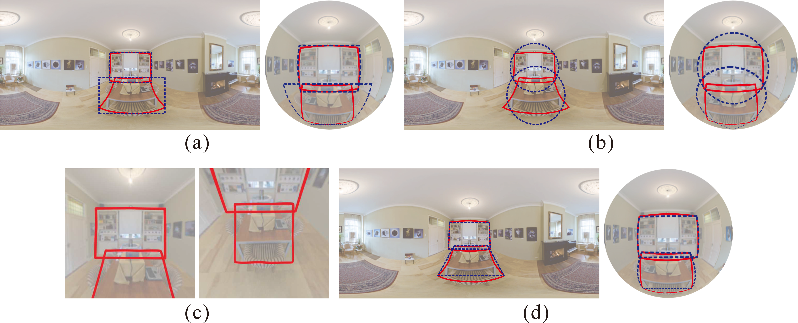
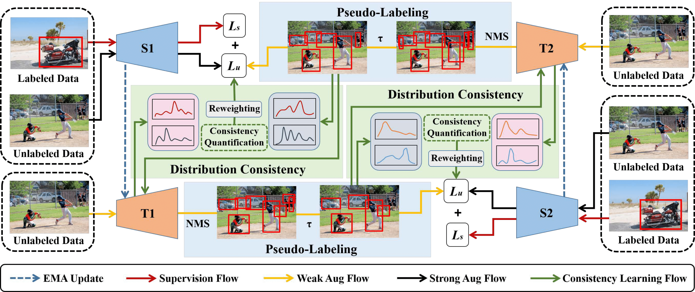
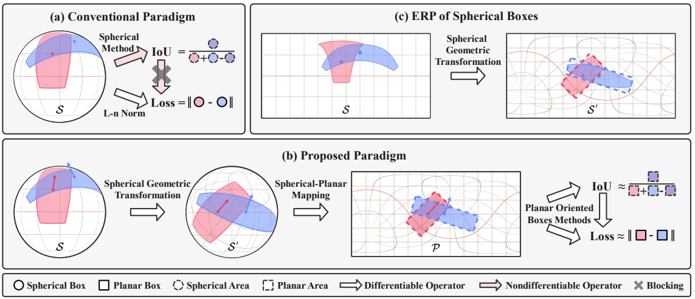
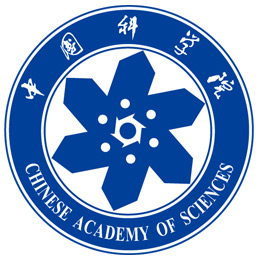
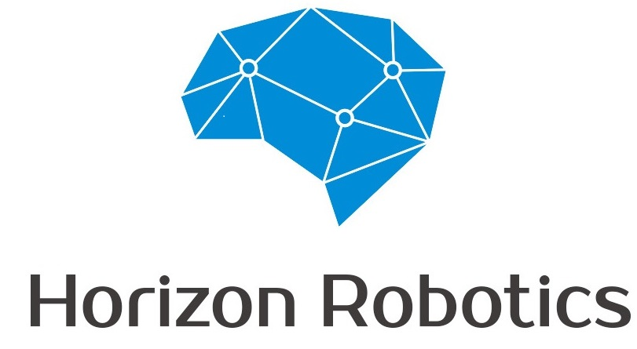
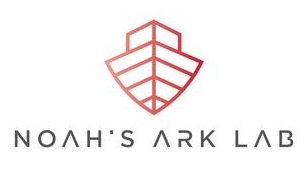

Bin Chen (陈 彬)Researcher
Aug. 2023 - Now Master's Graduate
Sep. 2020 - Jun. 2023 Google Scholar / DBLP / Github / Email: chenbin201@mails.ucas.ac.cn |
|
🌸 Biography
I received my Master's degree at the Institute of Computing Technology, Chinese Academy of Sciences in July 2023, under the supervision of Associate Professor Feng Dai, who offered me meticulous and valuable guidance that played a pivotal role in my progress. Additionally, I have also worked closely with Associate Professor Qiang Zhao and Professor Yike Ma, both of whom have greatly contributed to my research experience. Prior to that, I obtained my Bachelor's degree at the College of Software, Nankai University in July 2020, where I majored in Software Engineering and was supervised by Shenglin Zhang.
I am greatly interested in computer vision, with a focus on panoramic/semi-supervised/self-supervised object detection.
🔥 News
- 05/2023: One paper is accepted by IJCAI 2023.
- 10/2022: One paper is accepted by ACM MM 2022.
- 02/2022: One paper is accepted by AAAI 2022.
- 09/2020: I’m joining Institute of Computing Technology, Chinese Academy of Sciences as a M.S. student.
📝 Publications
|  | Unbiased IoU for Spherical Image Object Detection Feng Dai, Bin Chen, Hang Xu, Yike Ma, Xiaodong Li, Bailan Feng, Yuan Peng, Chenggang Yan, Qiang Zhao† AAAI 2022 (CCF-A) PDF / Arxiv / Code / Slides / Poster / BibTex |
|  | Cycle Self-Training for Semi-Supervised Object Detection with Distribution Consistency Reweighting Hao Liu*, Bin Chen*, Bo Wang, Chunpeng Wu, Feng Dai, Peng Wu ACM MM 2022 (CCF-A) PDF / Arxiv / Code / Video / Poster / BibTex |
|  | Sph2Pob: Boosting Object Detection on Spherical Images with Planar Oriented Boxes Methods
Xinyuan Liu, Hang Xu, Bin Chen, Qiang Zhao, Yike Ma, Chenggang Yan, Feng Dai† IJCAI 2023 (CCF-A) PDF / Supp / Code / Slides / Poster / BibTex |
🎓 Education
|  |
M.S. degree, Institute of Computing Technology, Chinese
Academy of Science (ICT, CAS) Beijing, China Sep. 2020 - Jun. 2023 |

|
B.E. degree, College of Software,
Nankai University (NKU) Tianjin, China Sep. 2016 - Jun. 2020 |
🎖 Awards
- First-Class Academic Scholarship, Oct. 2022 & Oct. 2023
- Excellent Graduate in Beijing, Jun. 2023
- Triple-A Student of CAS, Apr. 2022 & Apr. 2023
- National Scholarship for Postgraduates, Nov. 2022
- Enterprise Scholarship in ICT, CAS, Jan. 2022
- First prize of China Undergraduate Mathematical Contest in Modeling in Tianjin, Sep. 2018
- National Encouragement Scholarship, Nov. 2016 & Nov. 2017
✨ Internship
|
Transformer Department, MEGVII Beijing, China Algorithm Intern in Autonomous Driving, May. 2022 - Aug. 2022 Multimodal Fusion Perception of LiDAR & Camera with Strategies is utilized to improve 3D detection results on NuScenes dataset. |

|
|
|
"Auto" Research Department, Horizon Robotics Beijing, China Algorithm Intern on 2D Object Detection Mar. 2021 - Jul. 2021 Centernet2 is being researched to improve the detection performance on small objects with lower time cost. |
 | |
|
Noah's Ark Lab for Autonomous Driving, HUAWEI Beijing, China Algorithm Intern of Researching on Key Issues of Fisheye Images Feb. 2020 - Mar. 2021 The isometric projection model is constructed and a distorted focal loss is designed to detect distorted objects on fisheye images. |
 |
📁 Academic Activities
- Program Committee Members for Conference: CVPR 2024, ACM MM 2024/2023.
© Bin Chen | Last updated: May. 2024.